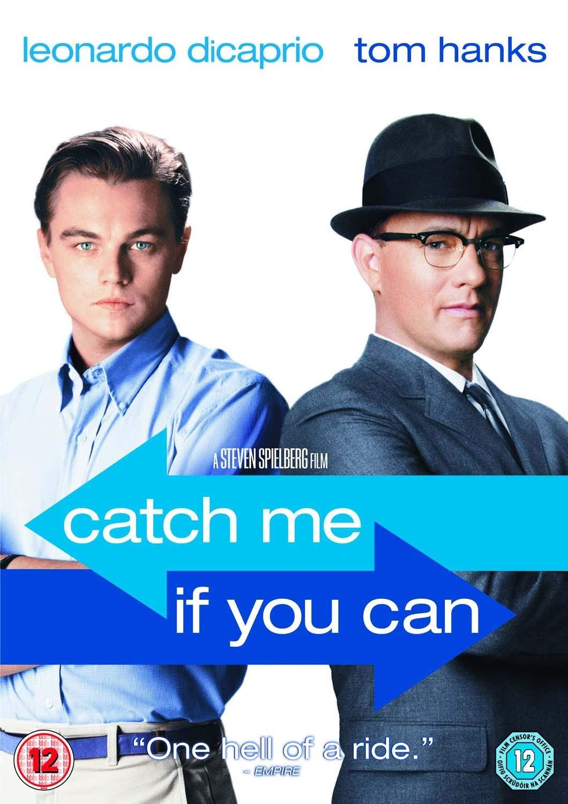
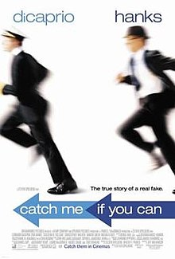
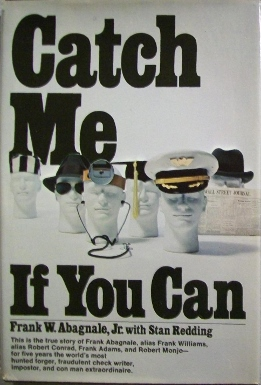

American actor and producer. He has often played unconventional parts, particularly in biopics and period films. As of 2019, his films have earned US$7.2 billion worldwide. |
American actor and filmmaker. Known for both his comedic and dramatic roles, Hanks is one of the most popular and recognizable film stars worldwide, and is widely regarded as an American cultural icon. |
|    |
Cast: |